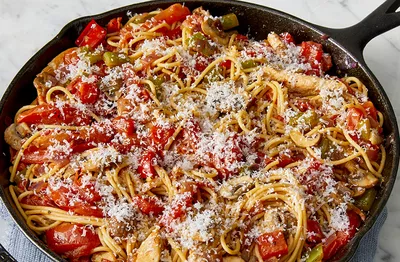

Skillet Chicken Pasta
Ingredients:
- 1 lb boneless, skinless chicken breasts, diced
- 8 oz penne pasta
- 1 tablespoon olive oil
- 1 onion, finely chopped
- 2 cloves garlic, minced
- 1 can (14 oz) diced tomatoes
- 1 cup chicken broth
- 1 teaspoon dried oregano
- 1 teaspoon dried basil
- 1/2 teaspoon red pepper flakes (optional)
- Salt and pepper to taste
- 1 cup shredded mozzarella cheese
- Fresh parsley, chopped (for garnish)
Instructions:
- Cook penne pasta according to package instructions. Drain and set aside.
- In a large skillet, heat olive oil over medium-high heat.
- Add diced chicken and cook until browned and cooked through.
- Remove chicken from the skillet and set aside.
- In the same skillet, add chopped onion and minced garlic. Sauté until softened.
- Stir in diced tomatoes, chicken broth, oregano, basil, red pepper flakes (if using), salt, and pepper. Simmer for 5 minutes.
- Add cooked chicken and cooked penne pasta to the skillet. Stir to combine.
- Sprinkle shredded mozzarella cheese on top and cover the skillet until the cheese is melted.
- Garnish with chopped fresh parsley and serve hot.